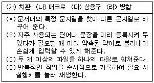
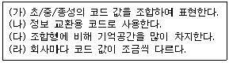
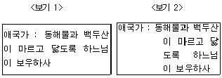
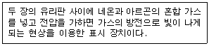
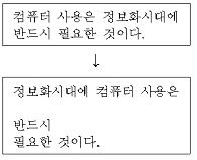
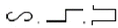
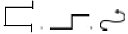
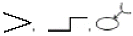
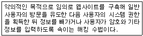
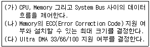

워드프로세서-(구-1급) (2006-08-27 기출문제)
1과목: 워드프로세싱 일반
1. 다음 보기의 각 기능과 설명이 올바르게 연결된 것은?

- (가) - (B)
- (나) - (D)
- (다) - (C)
- (라) - (A)
(정답률: 85%)

2. 다음 중 탭(Tab)에 대한 설명으로 옳지 않은 것은?
- [Tab] 기능이 사용된다.
- 탭 간격을 일정하게 유지할 수 있다.
- 탭의 종류도 선택할 수 있다.
- 탭으로 들여쓰기/내어 쓰기도 설정할 수 있다.
(정답률: 61%)
3. 다음 중 한글 완성형 코드에 대하여 올바르게 설명한 것으로만 짝지어진 것은?

- (가), (나)
- (나), (다)
- (다), (라)
- (가), (라)
(정답률: 66%)
4. 다음 중 <보기 1>과 같이 작성된 문서를 <보기 2>와 같이 편집하고자 할 경우 사용된 문단모양 기능은 어느 것인가?

- 가운데 정렬
- 오른쪽 정렬
- 들여 쓰기
- 내어 쓰기
(정답률: 53%)
5. 다음 중 보일러 플레이트(Boiler Plate)와 관련 있는 것은?
- 꼬리말(Footer)
- 메일머지(Mail Merge)
- 매크로(Macro)
- 병행처리(Spool)
(정답률: 64%)
6. 다음 중 목차 만들기에 대한 설명으로 옳지 않은 것은?
- 목차 만들기의 결과는 본문 파일의 머리말 영역에 삽입된다.
- 제목 목차뿐만 아니라 표 목차의 구성도 가능하다.
- 주로 문서의 분량이 클 때 활용된다.
- 목차를 만들기 위해서는 목차에 포함될 항목을 표시해 두어야 한다.
(정답률: 62%)
7. 다음 보기에서 설명하고 있는 표시 장치는 어느 것인가?

- 전계 방출형 디스플레이(FED : Field Emission Display)
- 플라즈마 디스플레이(PDP : Plasma Display Panel)
- 액정 디스플레이(LCD : Liquid Crystal Display)
- 음극선관(CRT : Cathode Ray Tube Display)
(정답률: 61%)
8. 다음 중 파일의 확장자(Extension)에 대한 설명으로 옳지 않은 것은?
- 파일의 종류나 형식을 나타낸다.
- 파일명에서 확장자는 점(.)으로 구분한다.
- 확장자는 지울 수 없다.
- COM, BAT, EXE 등이 있다.
(정답률: 65%)
9. 다음 중 워드프로세서의 표시기능에 대한 설명으로 옳지 않은 것은?
- 포인트는 문자의 크기 단위로 1포인트는 보통 0.351mm이다.
- 장평이란 문자의 가로 크기에 대한 세로 크기의 비율을 말한다.
- 줄(행) 간격이란 윗줄과 아랫줄의 간격으로 단위는 줄에서 크기가 가장 큰 글자를 기준으로 간격을 조정하는 비례 줄 간격 방식을 디폴트로 제공한다.
- 자간이란 문자와 문자 사이의 간격을 의미한다.
(정답률: 63%)
10. 다음 중 복사나 잘라내기를 한 후 워드프로세서 프로그램을 종료하고 다른 작업을 수행하지 않았을 경우에 대한 설명으로 옳지 않은 것은?
- 일반적으로 프로그램을 종료하면 복사하거나 잘라낸 내용이 사라지므로 붙여 넣기 할 수 없다.
- 복사하거나 잘라내기 한 내용은 클립보드에 저장된다.
- 다른 종류의 워드프로세서 프로그램을 실행하여 복사하거나 잘라내기 한 내용을 붙여 넣기 할 수 있다.
- 복사하거나 잘라낸 내용은 컴퓨터를 재부팅한 후 프로그램을 다시 실행하여 붙여 넣기 할 수 없다.
(정답률: 60%)
11. 다음 중 편지 병합(Mail Merge)에 대한 설명으로 옳지 않은 것은?
- 전체적인 내용은 동일하지만 수신인과 같이 특정 부분만 다른 여러 개의 문서를 만드는 경우에 적합하다.
- 외부 파일에 존재하는 데이터를 이용하여 작성할 수도 있다.
- 병합문서를 만들려면 문서의 1쪽에 편지 등의 내용 문을, 2쪽에 이름 등의 데이터를 넣어 처리한다.
- 병합된 편지는 직접 인쇄하거나 파일로 만들 수 있다.
(정답률: 54%)
12. 다음 중 공문서의 ‘끝’을 표시하는 방법에 대한 설명으로 옳지 않은 것은?
- 본문이 끝났을 경우에는 본문의 끝에서 1자(2타) 띄우고 ‘끝’ 자를 쓴다.
- 첨부물이 있는 경우에는 붙임의 표시문 끝에 1자(2타) 띄우고 ‘끝’ 자를 쓴다.
- 본문의 내용이나 붙임의 표시문이 오른쪽 한계선에서 끝난 경우에는 다음 줄의 왼쪽 기본선에서 1자(2타) 띄우고 ‘끝’ 자를 쓴다.
- 본문의 끝이 표일 경우에는 표 다음 줄에서 표의 오른쪽 끝에 맞추어 ‘끝’ 자를 쓴다.
(정답률: 56%)
13. 다음 중 고도의 압축기법을 통해 파일의 용량을 줄인 외곽선 형태의 글꼴로 주로 통신용으로 사용되는 글꼴 형태를 무엇이라고 하는가?
- 오픈 타입(Open Type)
- 트루 타입(True Type)
- 포스트 스크립트(Post Script)
- 비트맵(Bitmap) 방식
(정답률: 54%)
14. 다음 중 공문서의 발송에 대하여 설명한 것으로 옳지 않은 것은?
- 문서는 처리과에서 발송하되 우편을 이용하여 발신함을 원칙으로 한다.
- 인편 또는 우편으로 발송하는 문서는 문서과의 지원을 받아 발송할 수 있다.
- 전자문서의 경우에는 별도의 시행문을 작성하지 아니하고 결재한 문서를 시행문으로 변환하여 시행한다.
- 행정기관의 장은 공문서를 수발함에 있어 문서의 보안유지 분실, 훼손 및 도난방지를 위한 조치를 강구하여야 한다.
(정답률: 56%)
15. 다음 여러 가지 용어에 대한 설명 중에서 옳지 않은 것은?
- EDI : 네트워크를 통한 업무의 교환 시스템으로 문서의 표준화를 전제로 운영된다.
- DTP : 전자출판 또는 탁상 출판
- E-mail : 네트워크를 이용한 전자우편
- CWP : 문서작성 시 사용할 수 있도록 만들어 놓은 그래픽 데이터의 모음
(정답률: 63%)
16. 다음 중 공문서의 업무편람에 관한 설명으로 옳지 않은 것은?
- 업무편람은 행정편람, 직무편람, 직무명세서로 구분한다.
- 행정편람은 사무처리절차 및 기준, 장비운용 방법, 기타 일상적 근무규칙 등에 관하여 각 업무 담당자에게 필요한 지침, 기준 또는 지식을 제공하는 업무지도서 또는 업무참고서를 말한다.
- 직무편람은 부서별로 작성한다.
- 처리과의 장은 정기 또는 수시로 직무편람의 내용을 점검하여야 한다.
(정답률: 47%)
17. 다음 중 기억 장치에 대한 설명으로 옳지 않은 것은?
- 기억장치는 처리 속도와 사용용도, 기억 용량의 크기 등에 따라 캐시기억장치, 주기억장치, 보조기억장치 등으로 나눌 수 있다.
- 주기억장치는 프로그램 기억 장소, 입력 데이터 기억 장소, 작업 장소 및 출력 데이터 기억 장소로 사용되며, 내부기억장치라고도 한다.
- 주기억장치는 중앙처리장치(CPU)보다 실행 속도가 늦기 때문에 이를 보완하기 위해 개발된 것이 플래시메모리(Flash Memory)이다.
- 보조기억장치는 주기억장치에 있는 프로그램이나 데이터를 별도로 기억시켜 두었다가 필요할 때에 사용할 수 있도록 하는 기억장치이다.
(정답률: 73%)
18. 다음 보기와 같이 문장이 수정되었을 때 사용된 교정부호를 순서대로 올바르게 나열한 것은?


(정답률: 73%)
19. 다음 중 키보드나 마우스를 사용하여 메뉴나 아이콘을 선택하면 그것이 수행되는 직관적(Visual) 사용자 인터페이스 방식을 무엇이라고 하는가?
- GUI(Graphic User Interface)
- CUI(Character User Interface)
- Interface I/O Module
- Man-Machine Interface
(정답률: 62%)
20. 다음 중 문서의 분량이 증가될 수 있는 교정 부호들로 올바르게 짝지어진 것은?


(정답률: 75%)
2과목: PC 운영 체제
21. 한글 Windows XP에서 [보조프로그램]의 [엔터테인먼트]에 있는 [Windows Media Player] 프로그램에 관한 설명으로 옳지 않은 것은?
- 오디오 및 동영상 파일의 재생이 가능하다.
- 재생 목록 만들기와 편집이 가능하다.
- 사운드 파일의 편집이 가능하다.
- 다양한 스킨을 다운받거나, 선택하여 적용할 수 있다.
(정답률: 50%)
22. 한글 Windows XP의 네트워크 환경에서 프로토콜에 관한 설명으로 옳은 것은?
- 컴퓨터를 네트워크에 연결하는 어댑터의 일종이다.
- 네트워크 상의 서로 다른 컴퓨터 간에 통신을 가능하게 하는 규약이다.
- 파일 또는 프린터를 공유하는 프로그램이다.
- 하이퍼터미널과 같은 통신 소프트웨어를 설정하는 것이다.
(정답률: 61%)
23. 한글 Windows XP에서 [휴지통]에 관한 설명으로 옳지 않은 것은?
- [휴지통]의 용량은 운영체제에 의해서 항상 고정된 크기를 가진다.
- [휴지통]에는 삭제된 파일들이 보관되며, 삭제된 파일을 복원할 수도 있다.
- [휴지통]의 등록정보 창에서 파일이 [휴지통]에 보관되지 않고 바로 삭제되도록 할 수 있다.
- 삭제되었던 파일을 복원하면 삭제되기 전과 동일한 폴더에 복원된다.
(정답률: 67%)
24. 한글 Windows XP의 특징에 관한 설명으로 옳지 않은 것은?
- 마우스와 아이콘 등의 그래픽 작업 환경을 제공하는 그래픽 사용자 인터페이스(Graphic User Interface) 방식 지원
- 새로 하드웨어를 설치할 때 자동으로 처리하여 하드웨어 구성 및 충돌 방지를 해주는 자동 감지 설치(Plug and Play) 기능 지원
- 하나의 문서를 작성할 때 여러 응용 프로그램에서 작성된 문자나 그림들을 하나의 문서에서 자유롭게 삽입하고 수정도 쉽게 실행할 수 있는 OLE 기능 지원
- 하나의 작업 처리가 끝나기 전에 다른 작업을 처리하는 비선점형 멀티태스킹 방식 사용
(정답률: 53%)
25. 한글 Windows XP에서 [Windows 작업 관리자] 대화 상자에 관한 설명으로 옳지 않은 것은?
- [Ctrl]+[Alt]+[Delete] 키를 동시에 누르면 표시된다.
- 현재 실행중인 응용 프로그램에 대한 작업 끝내기를 할 수 있다.
- [시작] 단추와 시계를 표시할 수 있다.
- 끄기, 다시 시작, 사용자 전환 등을 위한 [시스템 종료] 메뉴가 있다.
(정답률: 63%)
26. 다음 중 한글 Windows XP에서 레지스트리를 편집하는데 사용되는 프로그램 파일은?
- notepad.exe
- regedit.exe
- wordpad.exe
- editor.exe
(정답률: 75%)
27. 한글 Windows XP의 [제어판]에 있는 [인터넷 옵션]을 선택하여 나타나는 [인터넷 등록정보] 창에서 설정할 수 있는 내용으로 옳지 않은 것은?
- 홈페이지로 사용할 페이지를 설정할 수 있다.
- 보안 설정을 지정할 영역과 수준을 사용자가 지정하여 설정할 수 있다.
- 각 인터넷 서비스에 자동으로 사용할 프로그램을 지정할 수 있다.
- 임시 인터넷 파일에서 검색어를 통한 검색 기능을 설정할 수 있다.
(정답률: 43%)
28. 한글 Windows XP를 시작하려고 멀티 부팅할 때 [시작 옵션] 메뉴를 표시하기 위해 사용되는 바로 가기 키는?
- [F4]
- [F5]
- [F6]
- [F8]
(정답률: 66%)
29. 한글 Windows XP에서 설치된 기본 프린터를 열었을 때 나타나는 인쇄 관리자 창에 표시되는 내용이 아닌 것은?
- 인쇄 문서의 이름
- 인쇄 문서의 상태
- 인쇄 문서의 소유자
- 인쇄 문서를 수정한 날짜
(정답률: 41%)
30. 다음 중 한글 Windows XP의 [내 컴퓨터] 창에 있는 C: 드라이브의 등록정보 창에서 [일반] 탭을 이용하여 할 수 없는 작업은?
- 디스크 정리
- 드라이브를 압축하여 디스크 공간 절약
- 디스크 볼륨의 오류 검사
- 빠른 파일 검색을 위해 디스크 색인 사용
(정답률: 43%)
31. 다음 중 한글 Windows XP에서 [휴지통]을 이용하여 파일을 복원할 수 있는 경우는?
- 3.5인치 디스크에 있는 파일을 삭제한 경우
- 네트워크 드라이브상의 파일을 삭제한 경우
- 파일을 삭제한지 한 달 이상이 지난 경우
- 휴지통 저장 용량보다 큰 파일을 삭제한 경우
(정답률: 53%)
32. 다음 중 한글 Windows XP에서 인터넷 TCP/IP와 관련하여 SNMP 프로토콜에 관한 설명으로 옳지 않은 것은?
- TCP/IP 네트워크에서 폭넓게 사용되는 네트워크 관리 표준이다.
- 네트워크 관리 소프트웨어를 실행하는 중앙 컴퓨터에서 워크스테이션이나 서버 컴퓨터, 라우터, 브리지 및 허브 같은 네트워크 호스트를 관리하는 방법을 제공한다.
- 관리 시스템과 에이전트의 분산 구조를 사용하여 관리 서비스를 수행한다.
- 인터넷 상의 컴퓨터 사이에서 파일을 복사하는데 사용되는 프로토콜이다.
(정답률: 49%)
33. 한글 Windows XP에서 [시작] 메뉴의 상단에 ‘내 폴더’라는 폴더 그룹을 등록하는 방법으로 옳은 것은?
- 마우스를 사용하여 [시작] 단추 위로 ‘내 폴더’ 아이콘을 끌어다 놓는다.
- [내 문서] 폴더에서 ‘내 폴더’라는 폴더를 만든다.
- C:\Windows 폴더에 ‘내 폴더’라는 폴더를 만든다.
- C:\Documents and Settings 폴더에 ‘내 폴더’라는 폴더를 만든다.
(정답률: 45%)
34. 한글 Windows XP의 [그림판] 프로그램에서 [파일] 주 메뉴의 하위 메뉴를 사용하여 할 수 없는 작업은?
- 스캐너 또는 카메라를 사용하여 이미지를 불러올 수 있다.
- 전자 메일을 사용하여 이미지를 보내기 할 수 있다.
- 그려진 그림을 바탕화면에 배경그림으로 지정할 수 있다.
- 다른 프로그램에서 작성한 모든 그림 파일을 현재 작업 중인 그림에 붙여 넣기 할 수 있다.
(정답률: 52%)
35. 다음 중 한글 Windows XP의 [제어판]에 있는 [마우스]를 선택하여 나타나는 [마우스 등록정보] 창에서 할 수 없는 것은?
- 왼손잡이를 위한 단추 설정을 할 수 있다.
- 두 번 클릭 속도를 조정할 수 있다.
- 포인터의 이동 자취를 표시할 수 있다.
- 포인터의 움직임 기능을 해제할 수 있다.
(정답률: 58%)
36. 한글 Windows XP에서 작업 표시줄의 오른쪽에 있는 알림 영역의 바로 가기 메뉴에 표시되는 항목이 아닌 것은?
- 날짜/시간 조정
- 알림 사용자 지정
- 열기
- 작업 관리자
(정답률: 45%)
37. 한글 Windows XP에서 시스템 도구인 [디스크 조각 모음] 프로그램으로 수행할 수 있는 저장 매체는?
- CD-ROM 드라이브
- 네트워크 드라이브
- Windows가 지원하지 않는 디스크 압축 프로그램에 의해 압축된 드라이브
- 파티션된 하드디스크 드라이브
(정답률: 48%)
38. 다음 중 한글 Windows XP의 [제어판]에 있는 [키보드]의 등록정보 창에서 설정할 수 있는 옵션 기능이 아닌 것은?
- 필터키 사용 설정
- 키 재입력 시간 설정
- 커서 깜박임 속도 설정
- 키 반복 속도 설정
(정답률: 50%)
39. 한글 Windows XP의 [제어판]에 있는 [내게 필요한 옵션]의 등록정보 창에서 슬라이더를 이용하여 커서의 깜박이는 속도 및 커서의 너비를 변경하려고 할 경우에 사용하는 탭 항목은?
- 디스플레이
- 키보드
- 소리
- 마우스
(정답률: 37%)
40. 한글 Windows XP의 [제어판]에 있는 [프로그램 추가/제거]를 이용하여 수행할 수 있는 작업으로 옳지 않은 것은?
- Windows 구성 요소를 추가, 제거할 수 있다.
- 설치된 응용 프로그램을 제거할 수 있다.
- 인터넷을 통해 새 Windows 기능, 장치 드라이버, 시스템 업데이트를 추가할 수 있다.
- 시동 디스크를 작성할 수 있다.
(정답률: 56%)
3과목: 컴퓨터 및 정보활용
41. 컴퓨터를 이용하여 업무를 효율적으로 처리하고자 할 경우에는 논리적이고 체계적인 프로그램을 작성하는 것이 중요하다. 일반적인 프로그래밍 순서를 올바르게 나열한 것은?
- 업무분석→입출력 설계 및 흐름도 작성→문서화→코딩→번역 및 오류수정→테스트→실행
- 업무분석→입출력 설계 및 흐름도 작성→코딩→번역 및 오류수정→테스트→실행→문서화
- 업무분석→테스트→문서화→입출력 설계 및 흐름도 작성→번역 및 오류수정→코딩→실행
- 업무분석→입출력 설계 및 흐름도 작성→코딩→번역 및 오류수정→실행→문서화→테스트
(정답률: 52%)
42. 다음 중 PC 통신의 용어에 대한 설명으로 옳지 않은 것은?
- 전송속도(bps) : Byte Per Second의 약자로 초당 전송되는 바이트 수를 의미한다.
- 패리티 비트(Parity Bit) : 데이터 전송시 에러 검출을 위해 데이터 비트에 붙여서 보내는 비트
- 정지 비트(Stop Bit) : 전송되는 데이터의 끝을 알리기 위해 보내는 비트
- 흐름 제어(Flow Control) : 자료를 송수신할 때 버퍼를 사용하여 그 속도의 흐름을 조절하기 위한 기능
(정답률: 36%)
43. 다음 중 일반 PC 형태가 아니며 주로 보드(회로기판) 형태의 반도체 기억소자에 응용 프로그램을 탑재하여 컴퓨터의 기능을 수행하는 시스템을 무엇이라고 하는가?
- 임베디드 시스템
- 분산처리 시스템
- 병렬처리 시스템
- 시분할처리 시스템
(정답률: 61%)
44. 다음 중 정전이 자주 일어나는 컴퓨팅 환경이나 신뢰성이 요구되는 서버 컴퓨터에 안정적인 전원을 공급하기 위한 장치는?
- AVR
- Surge Protector
- UPS
- CVCF
(정답률: 50%)
45. 다음 중에서 LAN을 매체접근 제어방식으로 분류하였을 경우, 이에 해당되지 않는 것은?
- CSMA/CD
- 토폴로지(Topology)
- 토큰링(Token Ring)
- 토큰버스(Token Bus)
(정답률: 51%)
46. 다음 중 목적 프로그램을 시스템 라이브러리와 연결시켜 실행 가능한 모듈로 생성해주는 역할을 하는 것은?
- Linker(링커)
- Loader(로더)
- Debugger(디버거)
- Assembler(어셈블러)
(정답률: 52%)
47. 다음 중 기존의 통신망에 특정한 부가가치를 첨가하여 고도의 통신 서비스를 제공하는 통신망을 의미하는 용어는?
- VAN
- LAN
- ISDN
- WAN
(정답률: 46%)
48. 다음 중 공개키 암호화 기법에 대한 설명으로 옳지 않은 것은?
- 이중키 암호화 기법이라고도 한다.
- 암호화키와 복호화키가 서로 다르다.
- 대표적인 알고리즘으로 RSA가 있다.
- 비밀키 암호화 기법에 비해 암호화와 복호화의 속도가 빠르다.
(정답률: 54%)
49. 다음 중 문자를 표현하는 코드체계가 아닌 것은?
- Hamming Code
- ASCⅡ
- EBCDIC
- KS X 10⑤-1
(정답률: 55%)
50. 다음 중 멀티미디어 소프트웨어에 관한 설명으로 옳지 않은 것은?
- 멀티미디어에 사용되는 영상은 많은 용량을 차지하므로 저장할 때는 압축하여 저장하는 소프트웨어도 있다.
- 멀티미디어 저작 도구를 이용하여 프로그램을 구축하기 위해서는 C 언어와 HTML을 알고 있어야만 가능하다.
- 멀티미디어 저작 도구를 이용하여 프레젠테이션, 광고, 전자출판, CD-ROM 타이틀 제작 등을 한다.
- 멀티미디어 소프트웨어는 음성, 그림, 영상 등의 미디어를 생성, 저장, 가공, 전송 등을 하는 프로그램이다.
(정답률: 60%)
51. 다음 중에서 라우터(Router)의 역할이 아닌 것은?
- 전체 네트워크를 작은 단위의 서브넷(subnet)으로 구분한다.
- 보안에 문제가 있는 경우 수신한 신호를 폐기한다.
- 여러 개로 나누어진 개별 네트워크를 연결하여 확장한다.
- 수신한 신호를 목적지 컴퓨터로 전달하기 위하여 중계한다.
(정답률: 50%)
52. 다음 중 MIDI 파일에 관한 설명으로 옳지 않은 것은?
- WAV 파일에 비해 크기가 작다.
- MIDI 악기와 MIDI 사운드카드가 소리를 재생할 때 필요한 명령어가 저장되어 있다.
- 음악을 악보와 비슷한 하나의 순서(sequence)로 부호화하여 저장한다.
- 사람의 목소리도 재생된다.
(정답률: 59%)
53. 다음 중에서 컴퓨터를 네트워크로 연결하기 위해 사용하는 인터네트워킹 기기가 아닌 것은?
- 리피터(Repeater)
- 라우터(Router)
- 브리지(Bridge)
- 레이드(RAID)
(정답률: 62%)
54. 다음 중 MPEG 기술을 이용하여 만든 오디오 파일 양식은?
- RA 파일
- MIDI 파일
- MP3 파일
- WAVE 파일
(정답률: 61%)
55. 다음 중 연산 장치의 구성에 대한 설명으로 옳지 않은 것은?
- 연산장치에서 사칙연산을 수행하는 기본 회로는 가산기이다.
- 연산 장치에는 연산한 결과가 기억되는 누산기가 있다.
- 연산장치에는 주기억장치에서 가져온 명령어를 기억하기 위한 기억 레지스터가 있다.
- 연산장치에서 뺄셈은 보수기에 의해 만들어진 보수를 이용하여 가산한다.
(정답률: 43%)
56. 다음에서 설명하는 용어에 해당하는 것은?

- 스푸핑(Spoofing)
- 스패밍(Spamming)
- 클러스터링(Clustering)
- 디버깅(Debugging)
(정답률: 64%)
57. 다음 보기의 내용은 무엇에 대하여 설명한 것인가?

- 칩셋(Chip Set)
- SCSI 카드
- PCMCIA 카드
- AGP
(정답률: 60%)
58. 다음 중 하이퍼텍스트(Hypertext)에 대한 설명으로 옳지 않은 것은?
- 하이퍼텍스트는 사용자의 선택에 따라 관련 있는 쪽으로 옮겨갈 수 있도록 조직화된 정보를 말한다.
- 월드와이드웹의 발명을 이끈 주요 개념이 되었다.
- 여러 명의 사용자가 서로 다른 경로를 통해 접근할 수 있다.
- 하이퍼텍스트는 선형 구조를 가진다.
(정답률: 49%)
59. 다음 중 메인보드에 간단히 끼울 수 있는 형태의 램으로 현재 대부분의 메인보드에서 채택하고 있는 것은?
- Dip RAM
- Module RAM
- PCMCIA
- Register
(정답률: 53%)
60. 컴퓨터 시스템에서 운영체제의 목적은 유한한 리소스의 효율적인 관리이다. 다음 중 운영체제가 관리하는 리소스의 종류와 거리가 먼 것은?
- 주기억장치
- 프로세서 스케줄
- BIOS
- 그래픽카드
(정답률: 44%)
- (가) - (B): 인터넷뱅킹 기능을 제공하는 것은 (다) - (C)이다.
- (나) - (D): 자동이체 기능을 제공하는 것은 (나) - (D)이다.
- (다) - (C): 인터넷뱅킹 기능을 제공하는 것은 (다) - (C)이다.
- (라) - (A): 신용카드 발급 기능을 제공하는 것은 (라) - (A)이다.